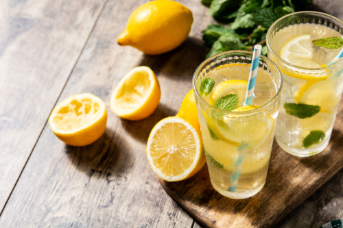

Fresh Home Made Lemonade
Description
This summer, with temperatures rising beyond belief, there's nothing better than a
sweet, cold, freshly made lemonade!
And this is what we'll be doing today!
"But isn't lemonade just water, lemon and sugar?" I hear you ask.
It can be, but today we are going to make something different!
Ingredients
- 2 limes
- 3 cups of water
- 1/2 cup of sugar
- 3 tablespoons of sweetened condensed milk
- ice cubes
Steps
- Wash limes thoroughly, cut off the ends and slice into eight wedges.
- Place limes in a blender with water, sugar, sweetened condensed milk,
and ice.
- Pulse 5 times, or until smooth.
- Strain through a fine mesh strainer to remove rinds.
- Serve over ice.